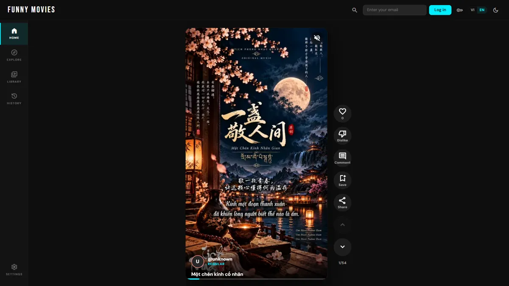

01 Web platform · Production
Funny Movies
Nền tảng xem và chia sẻ video ngắn, từ backend Java 24 tới SPA React 19, tự deploy lên Kubernetes sau mỗi lần push.
- Streaming theo
Rangerequest với LRU cache, chạy trên Virtual Threads - Đăng nhập passwordless bằng magic link, MFA TOTP tùy chọn
- Tự đồng bộ video từ Google Drive, import từ YouTube và Facebook
- Admin dashboard phân quyền theo role, giao diện Việt / Anh
- CI/CD: GitHub Actions → Docker → Helm, coverage gate 90%
- Java 24
- Spring Boot 3.5
- PostgreSQL
- React 19
- TanStack Query
- Kubernetes
